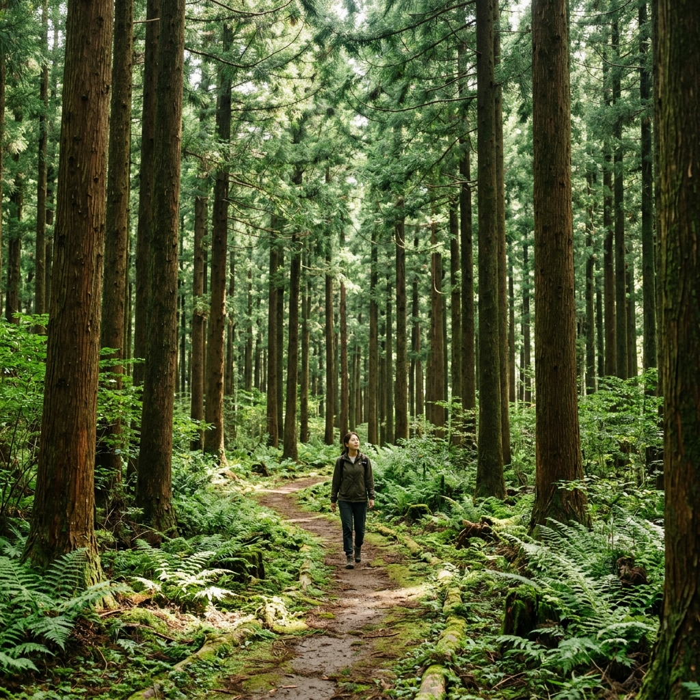
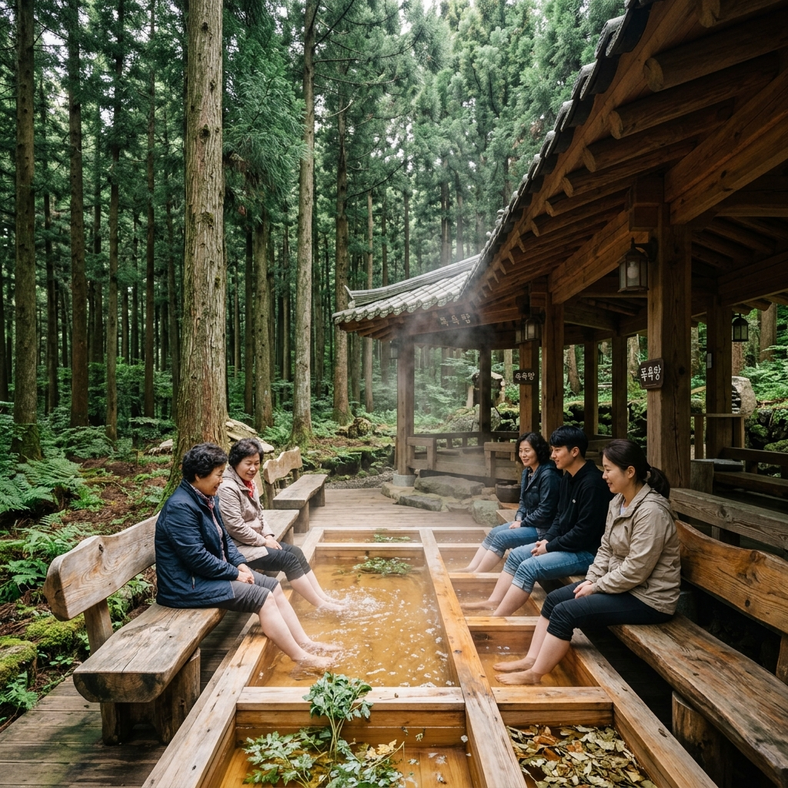

도시 생활에 지쳐 몸이 신호를 보낼 때, 목적지를 고민하다 선택한 곳이 전남 장흥이었습니다.
이름만 들어도 초록빛 산소가 느껴지는 장흥 우드랜드는 약 300만 그루의 편백나무와 삼나무가 가득한 치유의 공간입니다.
6월은 피톤치드 농도가 절정에 달하는 시기라고 알고 있었지만, 막상 숲 안으로 들어서자 그 기대를 훌쩍 뛰어넘는 청량감이 몸 전체를 감쌌습니다.
솔직한 방문 후기와 함께 알아두면 도움이 되는 정보를 모두 담아 정리했습니다.
장흥 우드랜드는 전남 장흥군 장흥읍 우드랜드길 180에 자리 잡고 있습니다.
이 공간은 단순한 공원이 아니라 산림청이 지정한 치유의 숲으로, 도심에서 멀리 떨어진 남도의 산자락에 깊숙이 숨겨져 있습니다.
처음 진입로에 들어서면 양옆으로 우뚝 솟은 편백나무들이 하늘을 향해 뻗어 있고, 발걸음을 내딛을 때마다 발 아래에서 흙내음과 나무향이 올라옵니다.
나무들의 수령은 수십 년을 훌쩍 넘어 그 밀도와 높이가 상당한 수준입니다.
약 300만 그루에 달하는 편백과 삼나무가 빼곡하게 들어찬 숲은 한 걸음씩 안으로 들어갈수록 바깥세상이 점점 멀어지는 기분을 줍니다.
탁 트인 하늘 대신 연두색 천장이 머리 위를 덮고, 새소리와 바람 소리만 귀를 채웁니다.
여름이 막 시작되는 6월에는 나뭇잎들이 가장 힘차게 광합성을 하면서 숲 전체가 말 그대로 살아 숨 쉬는 느낌을 줍니다.
방문 첫날, 입구에서 우드랜드 안내도를 받아 들고 산책로를 천천히 걷기 시작했을 때의 첫인상은 '여기 정말 왜 이렇게 늦게 왔지'라는 후회였습니다.
남도 여행을 계획 중이라면 우드랜드는 반드시 일정에 넣어야 할 공간입니다.

피톤치드는 나무가 스스로를 보호하기 위해 내뿜는 방어 물질입니다.
그 가운데 편백나무의 주성분인 알파-피넨(α-Pinene)은 인체에 들어오면 스트레스 호르몬 코르티솔을 낮추고, 면역세포인 NK세포 활동성을 높이는 것으로 알려져 있습니다.
식물은 기온이 높고 햇빛이 강할수록 더 많은 피톤치드를 방출합니다.
그래서 연구자들은 6월에서 8월 사이를 피톤치드 농도 절정기로 꼽는데, 특히 아침 10시에서 오후 2시 사이에 기공이 열리면서 피톤치드 방출량이 최고치에 이릅니다.
우드랜드처럼 수백만 그루가 밀집된 편백림에서 이 시간대에 산책을 하면, 도심 공원과는 비교할 수 없는 농도의 향을 온몸으로 흡수할 수 있습니다.
단순히 향이 좋다는 차원이 아니라, 측정 가능한 수치로 실내 공기와 큰 차이를 보이는 수준입니다.
실제로 숲속에 30분 정도 머물자 이유 모를 두통이 사라지고 머리가 한결 가벼워지는 경험을 했습니다.
호흡기가 약하거나 만성 피로를 느끼는 분들이라면 더욱 체감이 클 것이라고 생각합니다.
따라서 장흥 우드랜드는 봄이나 가을보다 여름 초입인 6월이 방문 적기라고 자신 있게 말할 수 있습니다.
우드랜드는 매일 오전 8시부터 오후 6시까지 운영되며, 계절이나 행사에 따라 운영 시간이 변동될 수 있으니 사전에 확인하는 것이 좋습니다.
입장료는 성인 기준 5,000원으로, 숲의 규모와 시설을 감안하면 전혀 아깝지 않은 금액입니다.
입장 후 받는 안내 지도를 꼼꼼히 살펴보면 크게 두 가지 산책 루트가 나뉩니다.
짧은 루트는 약 1.5km로 편백나무 군락지와 전망대를 거쳐 돌아오는 코스이고, 긴 루트는 3km 이상으로 야영장과 체험관까지 아우릅니다.
처음 방문한다면 짧은 루트부터 걸어 전체적인 구조를 파악하고, 여유가 있다면 긴 루트로 이어가는 방식을 권합니다.
산책로는 대부분 평탄한 황토길과 데크로 이어져 있어 운동화 한 켤레면 충분히 즐길 수 있습니다.
군데군데 놓인 나무 벤치에 앉아 눈을 감고 숨만 쉬어도 충분히 치유가 되는 기분입니다.
특히 경사가 완만한 언덕 구간에는 편백나무 기둥들이 열 지어 서 있어 사진 찍기에도 최고의 배경을 제공합니다.
빛이 나무 사이로 비스듬히 들어오는 오전 시간대가 사진 퀄리티도 높고 향도 가장 진하게 느껴집니다.
삼림욕은 그냥 걷는 것과는 조금 다릅니다.
전문가들은 천천히 걸으면서 코로 깊게 들이마시고 입으로 천천히 내쉬는 복식 호흡을 권장합니다.
이 호흡법을 유지하면 피톤치드를 폐 깊숙이 흡수하는 데 효과적입니다.
또한 숲속에서 가능하다면 신발을 잠시 벗고 맨발로 흙길을 밟는 어싱(earthing)도 함께 하면 지면에서 올라오는 음이온 효과까지 누릴 수 있습니다.
우드랜드 내 황토길 구간이 그런 체험에 잘 맞게 조성되어 있습니다.
이어폰을 빼고 귀를 자연에 열어두면 새소리, 바람 소리, 나뭇잎 흔들리는 소리가 천연 ASMR이 됩니다.
스마트폰을 가방 깊숙이 넣고 최소 1시간 이상 디지털 디톡스를 하는 것도 삼림욕의 효과를 배가시키는 방법입니다.
또한 숲속에서 가볍게 스트레칭을 해주면 피로 회복 속도가 훨씬 빨라집니다.
목이나 어깨를 천천히 돌리고, 나무 기둥을 이용해 등 근육을 풀어주는 것만으로도 몸이 한층 가벼워지는 효과를 바로 체감할 수 있습니다.
건강 목적이라면 하루 한 번이 아니라 아침저녁 두 번 걷기를 추천드립니다.

우드랜드 안에는 숲속 야영장이 운영되고 있어 당일치기가 아닌 1박 이상의 체류도 가능합니다.
편백림 한가운데 마련된 캠핑 사이트는 나무 그늘이 자연스럽게 지붕이 되어 한여름에도 시원한 환경을 제공합니다.
텐트를 펼치고 눕자마자 맡게 되는 편백 향은 어떤 아로마테라피보다 진하고 자연스럽습니다.
밤사이에도 나무들이 방출하는 피톤치드 덕분에 수면의 질이 눈에 띄게 달라진다는 방문객 후기가 많습니다.
야영장 시설은 간이 화장실과 개수대가 갖춰져 있으며, 전기 공급 여부는 사이트마다 다를 수 있으니 예약 시 반드시 확인하는 것이 좋습니다.
여름 주말은 예약 경쟁이 꽤 치열하기 때문에 최소 2~3주 전에는 장흥 우드랜드 공식 홈페이지를 통해 예약하는 것을 권합니다.
이른 아침 새소리에 눈을 뜨고, 안개가 살짝 낀 편백림 속에서 마시는 커피 한 잔의 여유는 도시에서는 절대 경험할 수 없는 사치입니다.
아이를 동반한 가족이라면 야영장 근처의 낮은 산책로를 함께 걸으며 자연 교육의 장으로 활용할 수도 있습니다.
캠핑 장비가 없더라도 글램핑 형태의 숙박 옵션도 일부 운영되므로 홈페이지에서 옵션을 먼저 확인해보세요.
우드랜드 내부에는 단순히 걷는 것 외에도 즐길 수 있는 실내 공간이 마련되어 있습니다.
목재문화체험관은 나무와 관련된 다양한 전시와 체험 프로그램을 운영하는 복합 문화 시설입니다.
편백나무를 비롯해 국내외 주요 목재의 표본이 전시되어 있어 나무를 눈으로 보고, 손으로 만지고, 향까지 맡을 수 있는 오감 체험이 가능합니다.
아이들에게는 목재 공예 체험 프로그램이 특히 인기 있어 손으로 나무 소품을 직접 만들어볼 수 있습니다.
어른들에게는 편백나무 조각을 이용한 방향제 만들기나 나무 도마 제작 체험이 좋은 기념품이 될 수 있습니다.
체험 프로그램은 인원 제한이 있으므로 사전 신청이 필요하며, 당일 현장 접수도 잔여 석이 있을 때는 가능합니다.
실내 공간이라 갑작스러운 소나기가 내려도 걱정 없이 피할 수 있다는 점도 장점입니다.
매점에서는 편백 관련 건강 제품과 함께 지역 특산물을 판매하고 있어 가볍게 구경하는 재미도 있습니다.
전시관 입구 앞의 나무 조각 작품들도 사진 포인트로 손색이 없으니 놓치지 마세요.
우드랜드 방문과 함께 장흥 여행을 한 단계 업그레이드하고 싶다면 천관산도립공원을 연계하는 것을 적극 권합니다.
천관산은 해발 723m로 그리 높지 않지만, 정상부 일대의 억새밭과 바위 경관이 인상적입니다.
6월에는 나무들이 신록으로 가득 차 등산로 내내 초록 터널 속을 걷는 기분을 줍니다.
주요 탐방로는 탑산사 기점 코스와 연대봉 기점 코스가 있으며, 체력에 맞게 선택할 수 있습니다.
왕복 기준으로 짧은 코스는 약 2시간, 능선을 따라 걷는 긴 코스는 4시간 이상 소요됩니다.
정상부에서는 맑은 날 다도해의 섬들이 점점이 보이는 탁 트인 조망이 기다리고 있습니다.
우드랜드에서 천관산 탐방지원센터까지는 차로 20분 내외 거리로, 같은 날 두 곳을 모두 즐기기에 부담이 없습니다.
트레킹은 아침 일찍 우드랜드 삼림욕으로 시작해 오전 중에 천관산을 오르는 스케줄이 체력적으로 가장 알맞습니다.
하산 후에는 장흥 읍내로 이동해 지역 먹거리로 에너지를 보충하면 하루 일정이 완벽하게 채워집니다.
장흥 하면 빠질 수 없는 음식이 바로 삼합입니다.
장흥 삼합은 키조개 관자, 한우 구이, 표고버섯 세 가지를 한 점씩 함께 구워 먹는 방식으로, 세 가지 식재료의 풍미가 어우러지는 독특한 조합입니다.
키조개는 장흥 앞바다에서 나는 신선한 것으로, 쫄깃하면서도 담백한 맛이 한우 육즙과 만나 시너지를 냅니다.
여기에 표고버섯의 향긋하고 짭짤한 향이 더해지면 그야말로 입 안에서 세 가지 재료가 따로 또 같이 역할을 해냅니다.
장흥 읍내에는 삼합을 전문으로 하는 식당들이 모여 있어 선택지가 다양합니다.
점심 시간에는 줄을 서야 하는 곳도 있으니 오후 1시 이후 늦점 타이밍을 노리거나 미리 예약하는 것이 현명합니다.
고기와 해산물을 함께 즐기기 때문에 식사 한 끼로도 충분한 포만감을 줍니다.
삼합 이외에도 장흥에서는 간장게장, 갯장어 탕탕이, 매생이 요리 등 남도 해산물의 진면목을 즐길 수 있습니다.
장흥 정남진 토요시장이 열리는 날이라면 전통 시장을 둘러보며 각종 건표고버섯, 키조개 건조품 등 지역 특산물을 저렴하게 구입하는 재미도 있습니다.
서울 기준 장흥까지는 고속버스나 자가용 모두 이용 가능합니다.
자가용을 이용할 경우 장흥IC에서 빠져나와 23번 국도를 타고 이동하면 우드랜드 주차장까지 무리 없이 도착할 수 있습니다.
내비게이션에 '장흥 우드랜드' 혹은 '장흥읍 우드랜드길 180'을 입력하면 정확하게 안내됩니다.
주차장은 무료로 운영되며 규모가 넓어 주말에도 대기 없이 주차할 수 있었습니다.
대중교통을 이용하는 경우 광주 유스퀘어터미널에서 장흥 방면 직행버스를 타고 장흥터미널 하차 후 택시나 버스를 환승해야 합니다.
장흥터미널에서 우드랜드까지 택시를 이용하면 10분 내외의 거리입니다.
KTX나 SRT는 장흥 인근에 직접 연결되는 노선이 없어 목포역이나 순천역에서 하차 후 추가 이동이 필요합니다.
따라서 장흥 우드랜드를 편하게 즐기려면 자가용 이용이 가장 효율적입니다.
숙박은 장흥읍 내 모텔과 펜션, 혹은 우드랜드 야영장을 선택할 수 있으며, 천관산 자락의 리조트도 가까운 거리에 있습니다.
마지막으로 장흥 우드랜드를 찾기 전에 미리 챙겨야 할 사항들을 정리했습니다.
첫째, 신발은 굽이 낮고 바닥이 미끄럽지 않은 운동화가 적합합니다. 일부 구간에 경사가 있어 샌들이나 슬리퍼는 불편할 수 있습니다.
둘째, 물을 충분히 지참하세요. 숲속 매점이 있기는 하지만 여름철에는 물 소비가 많습니다.
셋째, 오전 10시에서 오후 2시 사이가 피톤치드 방출이 절정이므로 이 시간대를 노리고 방문 계획을 잡으세요.
넷째, 야영장 이용을 원한다면 반드시 사전 예약이 필요합니다. 현장 당일 예약은 거의 불가능합니다.
다섯째, 체험관 프로그램도 인원 제한이 있으므로 미리 홈페이지를 통해 신청하는 것이 안전합니다.
여섯째, 초여름에는 기온이 올라가므로 자외선 차단제와 모자를 챙기세요. 나무 그늘이 많지만 이동 중에는 햇빛에 노출될 수 있습니다.
일곱째, 삼합 맛집은 점심시간에 혼잡하므로 전날 또는 당일 아침 일찍 예약하는 습관을 들이면 좋습니다.
여덟째, 천관산도립공원을 연계한다면 등산화와 간식을 별도로 챙기세요. 우드랜드 산책로와는 다른 수준의 체력이 요구됩니다.
이 정도만 준비해도 장흥 우드랜드에서 완벽한 하루를 보낼 수 있을 것입니다.